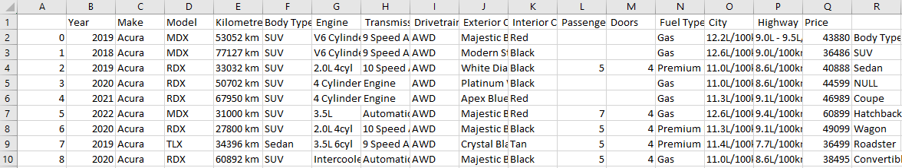
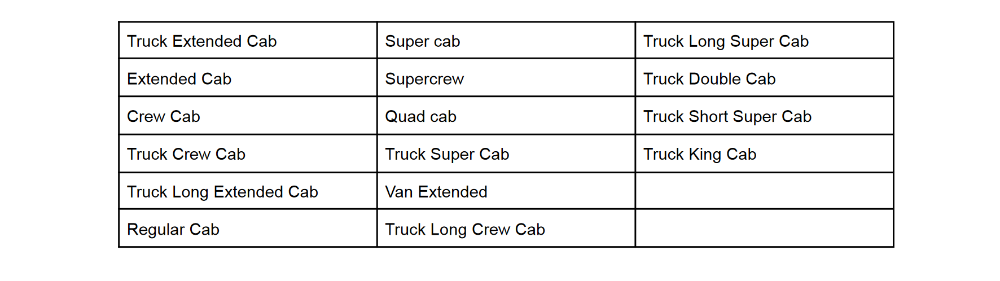
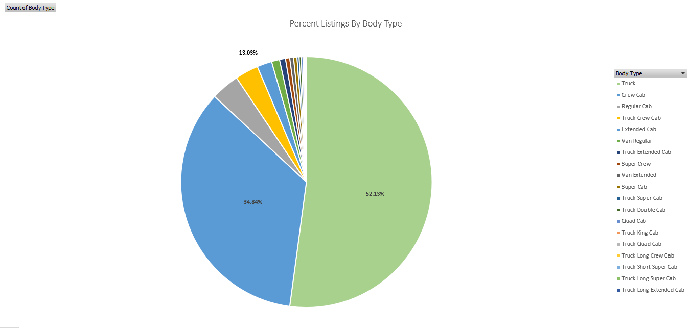
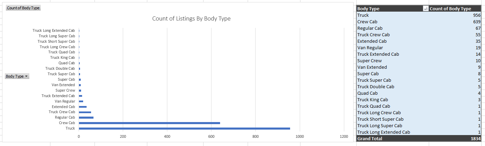
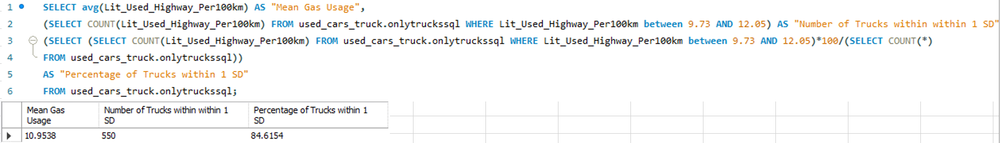
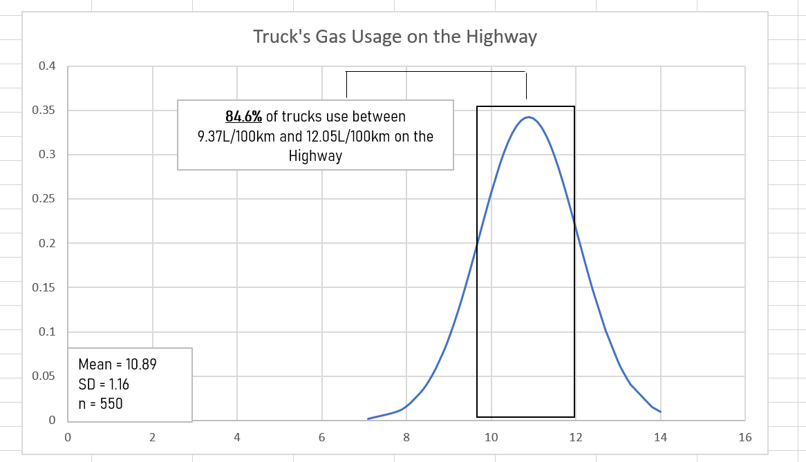
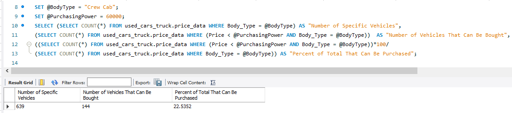
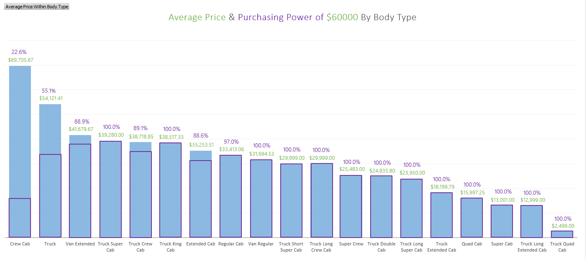

Excel Project
*SQL as well
A Case Study on 24,199 Used Vehicles For Sale Within 25 km Proximity of Downtown Toronto.
Dataset Obtained From Kaggle.
Summary:
Identified a subset dataset to match vehicle necessities for a roofing company
Cleaned the subset through Excel
Created Pivot charts illustrating market share by body type of vehicle
Created standard deviation graph and used SQL queries to identify significant percentages
Wrote a SQL query to return the % of listings that can be purchased
and visualized it alongside average price
Objects of Interest: Market Share, Gas Usage, Average Price, and Purchasing Power
from the perspective of an interested roofing company
Here is the inital .csv, but where do we begin? 
Well, roofing companies want lots of space. So a good start is to clean and analyze our data for larger vehicles. That being said how do we define larger vehicles? We have total of 31 unique body types. Since the number of unique body types is relatively small, we can manually research. We define this set as the larger vehicles.
Since we want to focus only on these defined larger vehicles, let's create a subset of the inital data with which
we can then clean and begin to analyze...
1. CTRL F and CTRL - to delete all the rows which hold body types
that aren't part of our larger vehicles set.
2. Remove the columns of "Passengers" and "Doors" since they aren't very relevant to our interests.
3. Remove any rows with NULL "Kilometers" or "Price" since they are crucial pieces of information.
4. Gas and Gasoline are the same thing; CTRL H to replace all the "Gasoline" with "Gas"
5. Removed duplicates within the remaining columns
6. Removed blank spaces through TRIM()
7. Used Find & Replace, SUBSTIUTE(), and "Text to Columns" to convert the columns representing gas usage in the city and on the highway into
a single digit numerical data type with which we can analyze (the previous format was not analytics friendly)
With the subset data somewhat cleaned, we then some pivot charts to gain some insights:
 
Right away, we see that there are two leading body types which dominate the market: "Truck" and "Crew Cab" with a staggering 52.13% and 34.84%, respectively. Another way to see this disparity, group together all the larger vehicles outside of the top 2 and they together only make up 13.03% of the listings.
Furthermore, even if we strip away percentages from the question, we see that "Truck" stands at the top with exactly 956 listings, still relatively far ahead of "Crew Cabs" following behind with 639; yet the third highest body type, "Regular Cab", is practically a rare sighting with a listing total of 67.
It is worth noting that not only does this analysis give us valuable insight into the current market of what we consider used larger vehicles, but also that any body type class not named "Truck" or "Crew Cab" is not worth analyzing independently in this case study simply due to the low number of data regarding them.
Since we cleaned up the formatting regarding the gas usage columns, we could now begin to analyze them. At inital glance, all the data values in the highway column appeared to be relatively close in value, in particular with the body type trucks. We decided to explore the validity of this speculation by building a normal distribution graph.
After calculating the mean, standard deviation, as well as normal deviation of all 550 data points, we plot all of our resulting values. Furthermore, we then write the following query within MySQL to return the percentage of trucks whose gas usage is within one standard deviation of the mean. 
Again, the following analysis would not be possible with the inital format of the City and Highway columns. Lastly, we consider our budget of $60,000 and build a visualization through Excel & SQL to represent our purchasing power in the current market. Recall that we have a relatively low count of body types aside from Crew Cabs and Trucks, meaning every reported percentage after not named Crew Cab or Truck should be taken with a large grain of salt.
We use the following query to calculate the percentages of vehicles by body type we can purchase with $60,000: 
And then graph all of our resulting percentages along the mean price, again grouped by body type:
Immeditately, we see that the average price of Crew Cab's far exceed the rest of the body types. Most notably, they exceed Truck's average price of $54,121.41 by nearly $15,000. Furthermore, through this visualization we gain the insight that with our current budget of $60,000, we can only consider a small portion of the Crew Cabs, specifically 22.6% of the total listings. Meanwhile for Trucks, our purchasing power looks stronger with us having the budget to consider 55.1% of the total truck listings. With the remaining body types of low count value, really the only thing we can say is that our budget seems to cover the majority of the rare listings of vehicles not named Crew Cab or Truck.